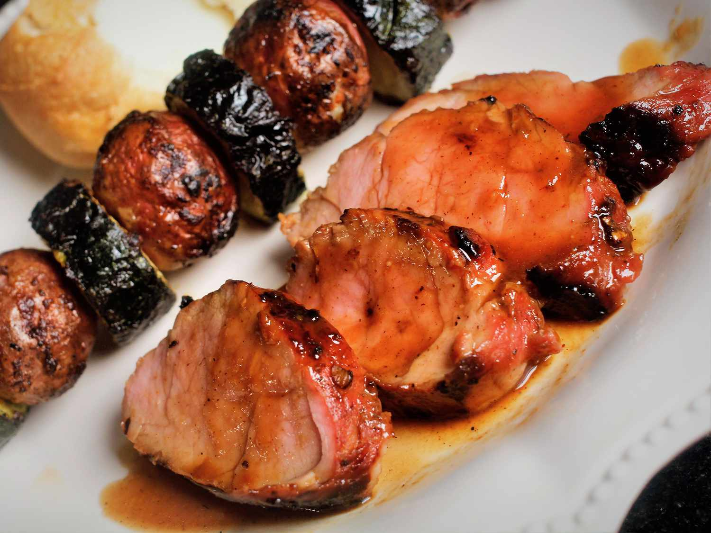

Marinated Grilled Pork Tenderloin

Description
Marinated Grilled Pork Tenderloin is a succulent dish that expertly
combines a variety of flavors. The tenderloin is marinated in a rich
mix of orange juice, soy sauce, olive oil, garlic, and fresh rosemary.
This fusion of tangy citrus, savory soy, aromatic garlic, and the
woody undertones of rosemary creates a deep, multi-layered flavor
profile that makes each bite of pork an unforgettable experience.
The pork tenderloin itself, due to its marinating process and grilling
technique, emerges juicy and tender, with a delightful smoky char. The
marinade not only imparts an exciting mix of tastes but also helps to
tenderize the meat, resulting in a main course that's both flavorful
and satisfyingly tender. This dish showcases how simple ingredients,
when combined with the right techniques, can elevate a humble cut of
meat to a gourmet delicacy.
Ingredients
- 1/4 cup honey
- 1/4 cup soy sauce
- 1/4 cup oyster sauce
- 2 tablespoons brown sugar
- 4 teaspoons minced fresh ginger root
- 1 tablespoon ketchup
- 1 tablespoon minced garlic
- 1 tablespoon chopped fresh parsley
- 1/4 teaspoon onion powder
- 1/4 teaspoon cayenne pepper
- 1/4 teaspoon ground cinnamon
- 2 (12 ounce) pork tenderloins
Directions
- Make marinade: Whisk together honey, soy sauce, oyster sauce, brown
sugar, ginger, ketchup, garlic, parsley, onion powder, cayenne
pepper, and cinnamon in a medium bowl; pour into a resealable plastic
bag.
- Place pork tenderloins into the bag; coat with marinade, squeeze out
excess air, and seal the bag. Marinate in the refrigerator for at
least 1 hour or up to 24 hours.
- Preheat the grill for medium heat and lightly oil the grate.
- Remove pork tenderloins from marinade; shake off excess. Discard
remaining marinade.
- Cook pork tenderloins on the preheated grill until no longer pink in
the center, 20 to 30 minutes, turning occasionally. An instant-read
thermometer inserted into the centers should read at least 145 degrees
F (63 degrees C).